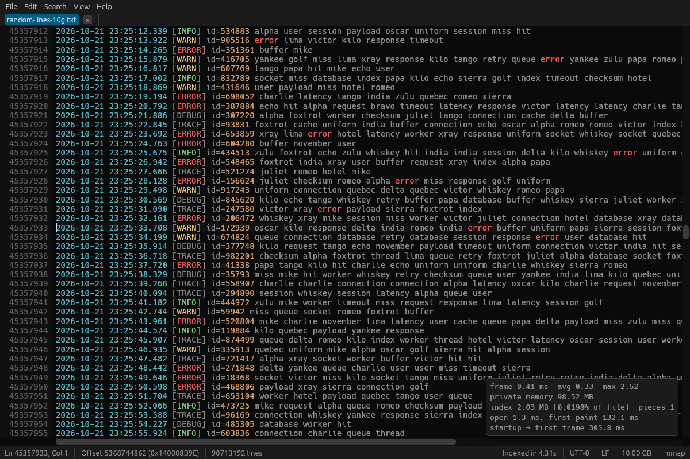
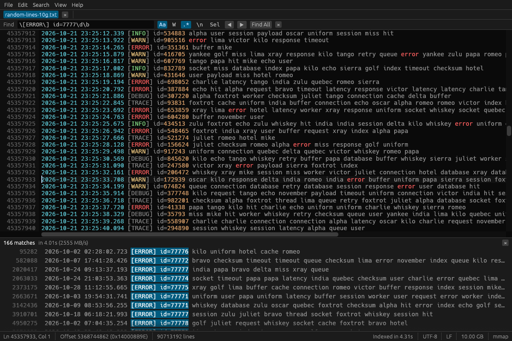
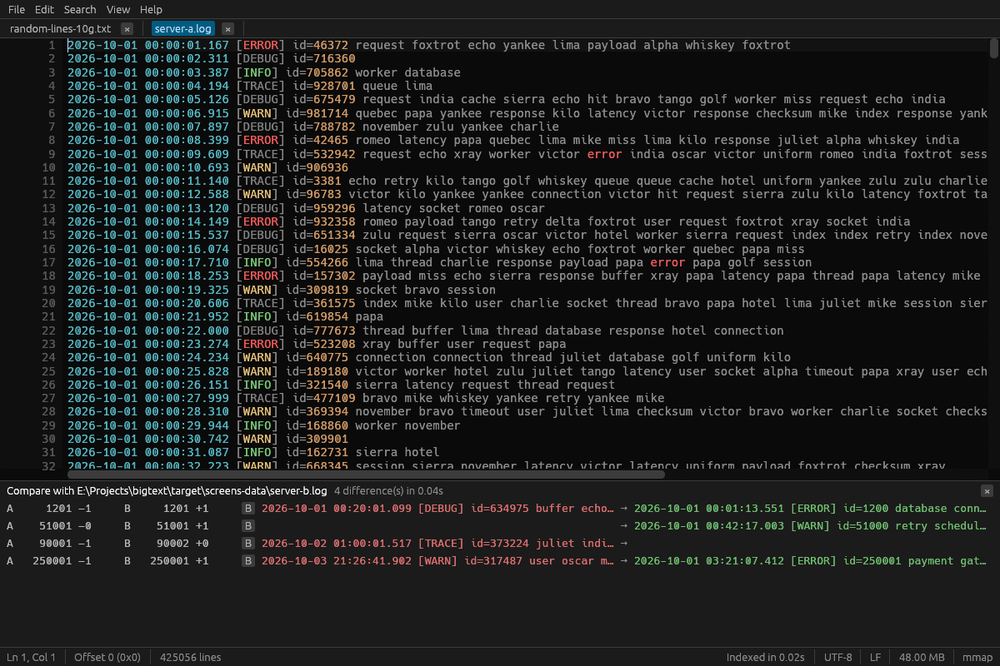
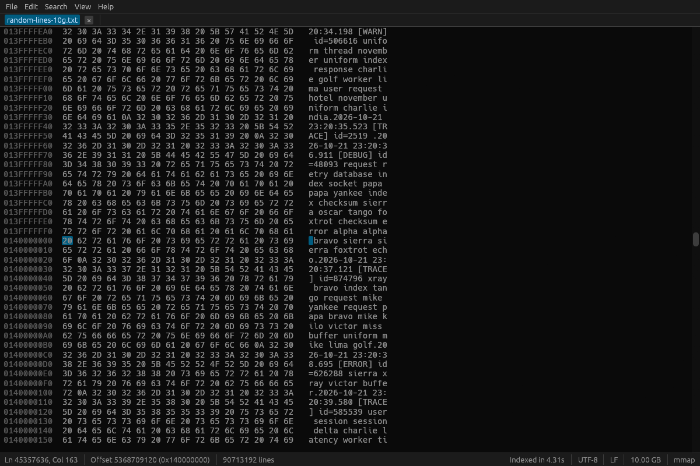
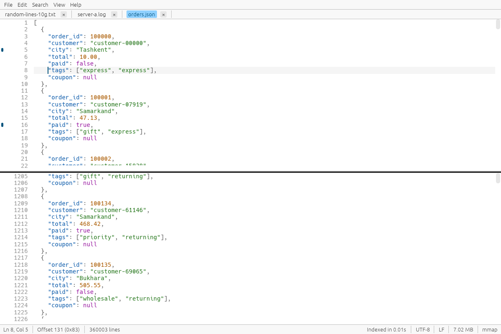

Файлы любого размера
Читается только видимая часть — через окна отображения файла в память. Фоновые задачи читают остальное потоком, а для сетевых и USB-дисков есть кэшированное чтение блоками, поэтому медленный диск не блокирует окно.
1 ГБ, 10 ГБ, 50 ГБ и больше — без зависаний и ожидания.
BigText — бесплатный редактор с открытым кодом для лог-файлов, выгрузок CSV, дампов баз данных и любых файлов, которые слишком велики для обычных редакторов. Он никогда не загружает файл в память целиком: лог на 10 ГБ открывается за миллисекунды и занимает около 100 МБ ОЗУ.
Windows · Linux · macOS · Лицензия MIT · Написан на Rust

Для логов, дампов CSV и SQL, выгрузок JSON и любых текстовых файлов, на которых другие редакторы зависают.
Читается только видимая часть — через окна отображения файла в память. Фоновые задачи читают остальное потоком, а для сетевых и USB-дисков есть кэшированное чтение блоками, поэтому медленный диск не блокирует окно.
Разреженный индекс строк (8 байт на 64 КБ) строится в фоне со скоростью 2,5 ГБ/с. Переход к строке и полоса прокрутки работают сразу, ещё до конца индексации.
Обычный текст — 2,5 ГБ/с, регулярные выражения за линейное время, учёт регистра, целые слова, многострочный режим. «Найти все» выводит до миллиона результатов, F3 работает сразу.
Замена с $1 и именованными группами. До 50 000 замен — одна отменяемая правка; большие задачи пишутся в новый файл потоком: 22 млн замен в файле на 10 ГБ — 11 с и 46 МБ ОЗУ.
Ввод, вырезание, копирование, вставка, отмена и повтор, дублирование и удаление строк, автоотступ — поверх таблицы фрагментов, так что файл не переписывается до сохранения.
Сохранение пишет временный файл, сбрасывает его на диск и атомарно заменяет оригинал. Сбой или отключение питания не оставят полузаписанный файл. Резервная копия .bak по желанию.
UTF-8, UTF-16 LE/BE, Windows-1251, Windows-1252 и ISO-8859-1 определяются автоматически; концы строк LF, CRLF и CR сохраняются или конвертируются. Двоичные файлы — в hex-режиме.
Режим слежения (как tail -f) за растущими логами, подсветка логов, JSON, XML, CSV, SQL и INI, закладки и разделённый вид одного файла.
Потоковое построчное сравнение двух многогигабайтных файлов: 1 ГБ с 1 ГБ за 0,6 с и около 2 МБ памяти. Щелчок по отличию переходит к нему.




Обычные редакторы читают весь файл, прежде чем что-то показать. BigText читает только то, что на экране, а всё остальное делает в фоновых потоках, поэтому окно отвечает быстрее чем за 3 мс.
Файл отображается окнами по 256 МБ, и читаются только байты, которые вы видите. Поиск, индексация и сохранение используют отдельное потоковое чтение.
Одна 8-байтовая контрольная точка на 64 КБ: 8 МБ индекса для файла на 50 ГБ. Строки между точками считаются по запросу с помощью SIMD.
Правки хранятся как небольшие фрагменты поверх исходного файла: вставка строки в файл на 50 ГБ стоит несколько байт, а отмена мгновенна.
Временный файл рядом с оригиналом, fsync, затем атомарная замена (ReplaceFileW в Windows сохраняет атрибуты и права доступа).
Результаты встроенных бенчмарков на тестовых файлах 1, 10 и 50 ГБ в Windows 11. Методика и полные результаты — в README. README
| Задача | Результат |
|---|---|
| Открытие → первый экран текста (1–50 ГБ) | 41–46 мс |
| Переход к строке в файле на 50 ГБ | меньше 1 мс |
| Построение индекса строк | 2,2–2,7 ГБ/с (50 ГБ примерно за 20 с) |
| Поиск обычного текста | 2,4–2,5 ГБ/с |
| Поиск по регулярному выражению | 2,3–2,8 ГБ/с с литеральной частью, 672 МБ/с без неё |
| «Заменить все» в файле на 10 ГБ | 11,3 с, пик памяти 46 МБ |
| Память с открытым файлом на 50 ГБ | 107 МБ |
| Запуск → первый кадр | 159–185 мс |
Бесплатно для личного и коммерческого использования. Без аккаунта, без телеметрии, один исполняемый файл.
Установщик с пунктом «Открыть с помощью» и контекстным меню Проводника или портативная версия.
Портативный архив .tar.gz для X11 и Wayland.
Сборки для Apple Silicon и Intel. Приложение не подписано: при первом запуске — правый щелчок → Открыть.
Установите Rust с rustup.rs и выполните:
git clone https://github.com/Erkinbek/bigtext.git
cd bigtext
cargo build --releaseУстановите BigText и откройте файл через Файл → Открыть, перетащив его в окно или через правый щелчок → «Открыть в BigText». Первый экран появляется примерно за 40 мс при любом размере; прокрутка и переход к строке работают, пока индекс строится в фоне.
Нет. Он отображает в память только видимую часть, а остальное читает потоком в фоне. С открытым файлом на 50 ГБ он занимает около 107 МБ ОЗУ, и большая часть этого — сам интерфейс.
Да. Правки хранятся в таблице фрагментов поверх исходного файла, поэтому ввод мгновенный при любом размере. При сохранении результат пишется во временный файл и атомарно заменяет оригинал, так что оригинал не пострадает, если что-то пойдёт не так.
Обычный текст ищется со скоростью 2,4–2,5 ГБ/с, типичные регулярные выражения — 2,3–2,8 ГБ/с, то есть лог на 10 ГБ просматривается примерно за 4 секунды. F3 находит следующее совпадение сразу, без полного поиска.
Да. Вид → Следить держит конец файла на экране и индексирует новые строки по мере появления. BigText также замечает изменения файла на диске и предлагает перезагрузить его.
Да. Строки длиннее 64 КБ показываются с мягкими переносами, поэтому даже одна строка на 2 ГБ прокручивается плавно.
UTF-8, UTF-16 LE/BE (с BOM и без), Windows-1251, Windows-1252 и ISO-8859-1 определяются автоматически и переключаются через Файл → Открыть заново в кодировке. Концы строк LF, CRLF, CR и смешанные распознаются и могут быть преобразованы при сохранении.
BigText бесплатный, с открытым кодом под лицензией MIT. Основная, полностью протестированная платформа — Windows 10 и 11; сборки для Linux и macOS (Apple Silicon и Intel) собираются и тестируются в CI при каждом изменении.